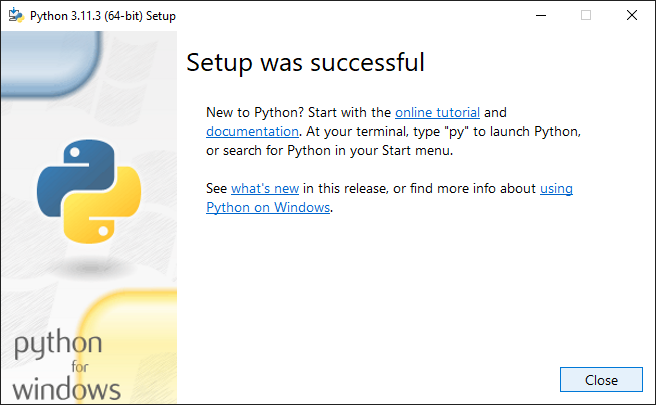

\(\rm\LaTeX\) si pronuncia /ˈlɑːtɛk/ or /ˈleɪtɛk/, e non /ˈleɪtɛks/ o /ˈleɪˌtɛks/ (IPA symbols).
Julia Fox
Maya Jama
Timothée Chalamet
Installazione
Installiamo un sistema offline per Windows, Linux e Mac.
Distribuzione di TeX
Installeremo un sistema TeX locale completamente funzionante; sono disponibili diverse opzioni multipiattaforma tra cui scegliere: MiKTeX, MacTeX, or TeX Live
Per questo corso useremo TeX Live, un sistema TeX completo e cross-platform.
Importante
Per favore, agli utenti di Mac, utilizzate questa installazione. In questo modo, tutti avremo la stessa versione installata localmente. Di seguito troverete le istruzioni dettagliate da seguire passo passo.
Requisiti
Per seguire questo corso è necessario avere installati sulla propria macchina:
Possiamo evitare di installare altri programmi che non ci servono.
4. “Install Now”

5. “Close”
Risoluzione problemi
Se cercando di invocare pip all’interno della Powershell:
pip : The term 'pip' is not recognized as the name of a cmdlet,function, script file, or operable program. Check thespelling of the name, or if a path was included, verify that the path is correct and try again.At line:1 char:1+ pip+~~~+ CategoryInfo : ObjectNotFound:(pip:String)[], CommandNotFoundException+ FullyQualifiedErrorId : CommandNotFoundException
Oppure all’interno di un Command Prompt:
'pip' is not recognized as an internal or external command, operable program or batch file.
cliccare il menù start e cercare “environment variables”.
bisogna controllare che esistano ed eventualmente aggiungere questi due percorsi al PATH dell’utente:
Alla prossima installazione puoi utilizzare questo file, modificandolo in modo appropriato, per effettuare l’installazione di TeX Live:
install-tl--profile=texlive.profile
Post-installazione: impostazione PATH
Alla fine dell’installazione vengono stampati i seguenti messaggi:
Add /usr/local/texlive/2024/texmf-dist/doc/man to MANPATH.Add /usr/local/texlive/2024/texmf-dist/doc/info to INFOPATH.Most importantly, add /usr/local/texlive/2024/bin/x86_64-linuxto your PATH for current and future sessions.
Ora devi aggiungere la directory dei binari di TeX Live al tuo PATH:
echo'export MANPATH="$MANPATH:/usr/local/texlive/2024/texmf-dist/doc/man"'>> ~/.bashrcecho'export INFOPATH="$INFOPATH:/usr/local/texlive/2024/texmf-dist/doc/info"'>> ~/.bashrcecho'export PATH=/usr/local/texlive/2024/bin/x86_64-linux:$PATH'>> ~/.bashrcsource ~/.bashrc # aggiorna il file di configurazione
Puoi eseguire il codice soprastante nel tuo file ~/.bashrc per aggiornare il path, ma ricordati di cambiare l’anno.
Alcuni utenti Linux e Mac preferiscono utilizzare zsh come bash shell (da macOS Catalina, Ottobre 2019, è quella di default), in questo caso bisogna aggiornare il file ~/.zshenv, in particolare su Mac bisogna cambiare una cartella:
echo'export MANPATH="$MANPATH:/usr/local/texlive/2024/texmf-dist/doc/man"'>> ~/.zshenvecho'export INFOPATH="$INFOPATH:/usr/local/texlive/2024/texmf-dist/doc/info"'>> ~/.zshenvecho'export PATH=/usr/local/texlive/2024/bin/universal-darwin:$PATH'>> ~/.zshenvsource ~/.zshenv # aggiorna il file di configurazione
git version 2.40.1.windows.1Python 3.11.3Pygments version 2.15.1, [...]__ _ _ __ __ _ _ __ __ _/ _`|'__/ _` | '__/ _`||(_||||(_||||(_||\__,_|_|\__,_|_|\__,_|arara 7.0.5Copyright(c)2024, Island of TeXarara is released under the New BSD license.[...]
apri un terminale e digita arara main\[
\rm Hello\ \LaTeX!
\]
Manutenzione installazione
Aggiornare tlmgr stesso:
tlmgr update --self
Listare i pacchetti che possono essere aggiornati:
tlmgr update --list
Aggiornare un pacchetto specifico:
tlmgr update <pkgname>
Aggiornare tutti i pacchetti:
tlmgr update --all
Aggiornare sia tlmgr che tutti i pacchetti:
tlmgr update --self --all
Struttura del progetto
Da quali parti è composta una tesi?
Struttura generale di una tesi
Le voci in corsivo sono obbligatorie, quelle in tondo sono facoltative, quelle asteriscate non devono comparire nell’indice generale.
Supersezionamento
Sezione
Materiale iniziale
Frontespizio Colophon* Dedica* Sommario Indice generale Elenco delle figure* Elenco delle tabelle* Altri elenchi* Prefazione Ringraziamenti* Introduzione non numerata
Materiale principale
Introduzione numerata Capitoli Una o più appendici numerate
Materiale finale
Una o più appendici non numerate Glossario Bibliografia Indice analitico
Appendice
Special LaTeX characters
Alcuni caratteri sono riservati per comandi \(\rm\LaTeX\). Non possono essere usati direttamente nel codice sorgente.
Tabella 1: Caratteri speciali
Abbreviation
Carattere
Funzione
Codice
Backslash
\
Comincia un comando
\textbackslash
Braces
{ }
Delimitano un gruppo
\{ \}
Dollar sign
$
Delimita la matematica in linea
\$
Circumflex
^
Esponente matematico
\^{}
Underscore
_
Pedice matematico
\_
Ampersand
&
Separa le celle in una tabella
\&
Hash
#
Numero dell’argomento
\#
Tilde
~
Spazio indivisibile
\~{}
Percent
%
Commento
\%
Modificare lo stile del font
Tabella 2: Stili del font
Comando
Dichiarazione
Stile
\emph
\em
Emphasized
\textit
\itshape
Italic
\textsc
\scshape
Small caps
\textbf
\bfseries
Bold
\textsl
\slshape
Slanted
\textrm
\rmfamily
Roman
\textsf
\sffamily
Sans serif
\texttt
\ttfamily
Typewriter
Modificare la dimensione del font
Tabella 3: Dimensioni del font
Dichiarazione
Dimensione
\tiny
5pt
\scriptsize
7pt
\footnotesize
8pt
\small
9pt
\normalsize
10pt
\large
12pt
\Large
14.4pt
\LARGE
17.28pt
\huge
20.74pt
\Huge
24.88pt
Unità di misura in LaTeX
Tabella 4: Unità in LaTeX
Abbreviation
Value
pt
a point is approximately 1/72.27 inch, that means about 0.0138 inch or 0.3515 mm (exactly point is defined as 1/864 of American printer’s foot that is 249/250 of English foot)
mm
a millimeter
cm
a centimeter
in
inch
ex
roughly the height of an ‘x’ (lowercase) in the current font
em
roughly the width of an ‘M’ (uppercase) in the current font
mu
math unit equal to 1/18 em, where em is taken from the math symbols family
sp
so-called “special points”, a low-level unit of measure where 65536sp=1pt
Lunghezze comuni
Tabella 5: most common lengths
Length
Description
\baselineskip
Vertical distance between lines in a paragraph
\columnsep
Distance between columns
\columnwidth
The width of a column
\evensidemargin
Margin of even pages, commonly used in two-sided documents such as books
\linewidth
Width of the line in the current environment.
\oddsidemargin
Margin of odd pages, commonly used in two-sided documents such as books
\paperwidth
Width of the page
\paperheight
Height of the page
\parindent
Paragraph indentation
\parskip
Vertical space between paragraphs
\tabcolsep
Separation between columns in a table (tabular environment)